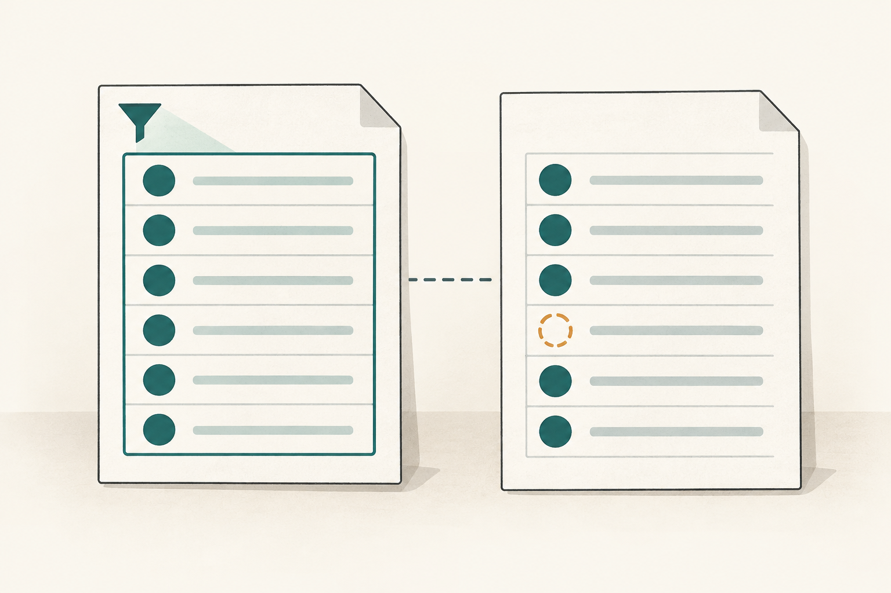
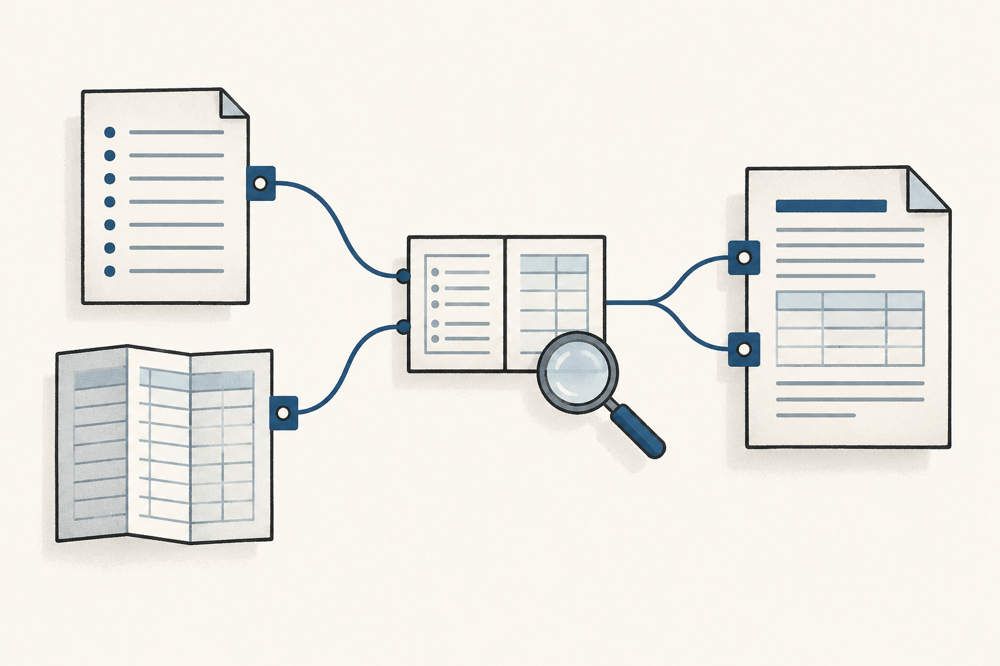
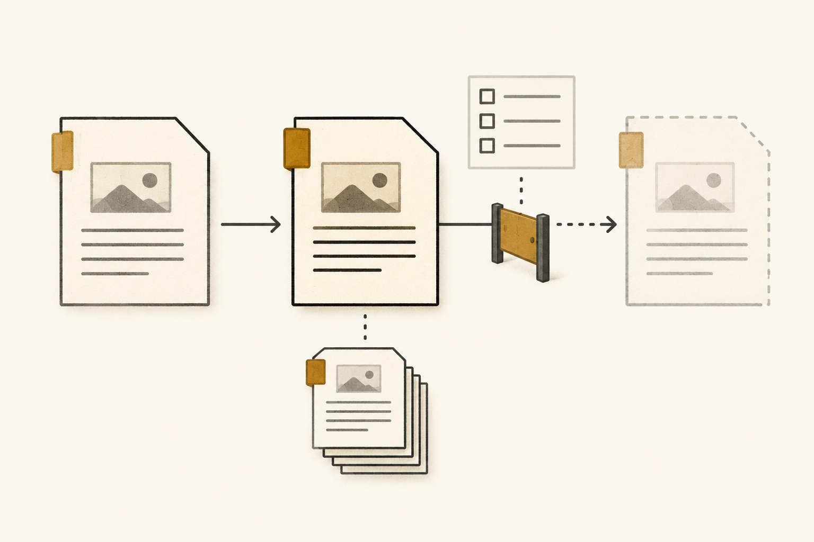

CyberAlchemy is a system for organizing knowledge and work. Definitions are where it starts.
Before we explain a concept or assess a result, we need to be clear about the words we’re using. A definition gives a term its meaning, along with the context and boundaries of that meaning.
Most of the time, we don’t stop to do this. Familiar words come with meanings we’ve learned through experience, so a conversation can move ahead without anyone spelling everything out.
Then someone calls a project “successful” or a piece of software “correct,” and you realize you might be using different criteria.
When another person, or a system, needs to examine your explanation, the boundaries matter. They need to know which meaning you intended before they can question it or use it in their own reasoning. The subject might be a software concept, a formula or even a description of a feeling.
A premise lets us proceed with an assumption while its truth is still open. With an axiom, our model takes a foundational proposition about the world or domain as given. An invariant requires the system to preserve a condition.
Each has a different job. Definitions give their terms the meanings and boundaries those jobs depend on.
In the Lab, someone accountable has to accept an exact definition version for a stated purpose and scope. That acceptance gives the version authority over meaning. Now an assessment or decision has a criterion to work with. This is why the Lab treats an accepted definition as a basic unit of that authority.
The practical part is connecting these meanings to records, rules, evidence and decisions. A record keeps an identifiable account of something the project needs to retain. A contract sets out requirements for a record or operation.
Those connections give people and AI agents something to return to: the meanings and conditions they need for the work.
Three questions to keep in mind
Explore this in the system map ↑Once we’ve stated a meaning, there is more to understand. Someone has to be responsible for establishing it, and the claims built on it need support. We also need to know how the meaning is allowed to change.
Governance organizes those responsibilities and rules.
The Lab uses three questions to keep this manageable. Authority asks which accepted meanings and rules apply, and who has permission to act within the relevant scope.
For provenance, we follow a record back to its sources and the work that produced it. Lifecycle looks at its current state and the changes allowed from there.
We’ll start with authority in the incident. Provenance and evidence follows the investigation’s sources. Lifecycle and admission follows the changes and the decisions each needs.
An export with missing records
We can examine all three questions in the same investigation. An accepted definition of completeness gives us a criterion, even while evidence about the software using it is incomplete.
Then there is permission. Investigating the incident and putting a change into use each require their own records and decisions.
Take a customer-data export. A customer says records are missing from the file they received. An agent investigates the report and prepares evidence for the owner responsible for the incident.
Northstar export is missing required customer records
Opened 09:42 UTC Updated 10:10 UTC Investigation checkpoint
Customer report
“Our customer-data export is missing records. Please investigate the file we received.”
The export requires 10,000 identifiers. The saved file contains 9,800 rows, and an identifier comparison confirms the omission.
Other accounts and downstream impact still need assessment.
- Account
- Northstar
- Filters
status = active- Source snapshot
S1- Export run
- 12 · output
E12
Investigation update
- Root cause
- Not yet established
- Containment / recovery
- Not yet established
- Proposed fix
- Revision 8 · candidate, efficacy unverified
Agent pausedTask view 3 has expired. Refresh the view and confirm current permission before further work.
Next actions
- Restore current task context and confirm the investigation delegation.
- Investigate cause and the extent of customer impact.
- Evaluate revision 8 and submit the evidence for owner review.
Deployment and incident closure require separate authorization.
Activity and evidence 5 updates
- Incident opened
The owner records the reported Failure Occurrence and takes responsibility for the response.
- Investigation assigned
Session 12 receives a Work Assignment. The owner separately delegates 30 minutes to inspect saved material and prepare material for review. The assignment supplies the job; the delegation supplies its permission.
- Omission confirmed
Method 2 compares identifiers in snapshot S1 and output E12, using completeness definition 1.0.0. The Evidence Set preserves what the comparison found, so a Failure Assessment can examine the result within that scope.
- Candidate response saved
Revision 8 is proposed for evaluation. No recovery or deployment is established.
- Agent work paused
Task view 3 expires; the incident response remains open.
Recorded evidence Input snapshot S1 · saved output E12 · identifier comparison, method 2 · Operational Observation version 1
What does “complete” mean here?
The agent needs a criterion before it assesses the omission. In this example, that means recovering the accepted definition of “complete” for the export.
Here’s the definition.
Complete customer-data export

Within the identifier-coverage scope, a customer-data export is complete if and only if every required row identifier from the declared account, filters and fixed source snapshot is present in its saved output.
Complete(E, S, A, F) ⇔ RequiredIds(S, A, F) ⊆ ExportedIds(E)Read the full definition
Symbols in the formula
- E
- The saved export output being assessed.
- S
- The identified, fixed source snapshot.
- A
- The declared customer account.
- F
- The declared filters that select rows within that account.
RequiredIds(S, A, F)- The identifiers of rows in snapshot S that belong to account A and satisfy filters F.
ExportedIds(E)- The identifiers of rows present in output E.
The export is complete when every identifier selected by the account and filters in that fixed snapshot is present in its output.
Scope and boundaries
- Applicability
- Identifier-coverage assessments of customer-data exports from a fixed input snapshot, for the declared account and filters.
- Exclusions
- Data-access permission, value accuracy, duplicate or extra rows, response time, permission to deploy a fix and incident closure are assessed under their own criteria.
- Semantic owner
- The customer-data service owner, responsible for this meaning within the export assessment scope.
- Boundary conditions
- Each required row has a stable identifier, and the snapshot and output use the same identity rule. The sets record presence of identifiers. Account membership and filters are evaluated against the snapshot’s values. A different snapshot, account or set of filters requires its own assessment.
- Plain-language voice
- Every required row identifier is present in the output.
- Domain-context voice
- While investigating the Northstar export incident, the agent compares the identifiers required by snapshot S1 and filter
status = activewith those in saved output E12. This assesses the reported omission.
- Stable identity
example.definition.complete-customer-data-export· version 1.0.0.- Authority scope
- Customer-data export completeness assessments for this illustrative service.
- Testable conditions
- If every required identifier is present, the completeness criterion is satisfied. If any required identifier is absent, it is not satisfied. Without an identifiable fixed input snapshot, the assessment remains unestablished.
- Boundaries
- The explanatory voices preserve the governing meaning. A changed meaning requires a successor definition version and the responsible owner’s acceptance. This definition supplies no permission to read data or deploy software.
- Primary consumers
- The row-comparison method, the agent’s assessment and the owner’s review of the completeness claim.
- Sources and evidence
- The extraction requirement is invented for this article. The later evidence example identifies inputs, output and method; those records support a result assessed under this definition.
- Registry and index
- A real acceptance would select this exact version in the definition registry and synchronize its lookup index. This example is not registered.
- Drift and challenge route
- The service owner reviews whether later assessments preserve this meaning. Bring contradictory evidence or a proposed change of meaning to that owner through the recorded review route.
Illustration generated with imagegen. Prompt and asset record.
The authorized service owner accepts this exact version for export completeness assessments.
That decision makes version 1.0.0 the governing criterion within the declared scope.Use the definition in the investigation
The definition gives the investigation a criterion. Now we can follow how the agent finds the rule, takes on the job and checks permission before applying it.
Applying the meaning to work
Once the meaning is established, we need to know what a record must contain and which other records it is allowed to connect to. Accepted record formats and connection rules set those requirements.
Before acting, the agent also needs the policies and explicit permissions for its task, including who is responsible for that scope.
Each governing record has its own owner and scope. A definition supplies the meaning for an assessment, while a policy governs permitted actions during that assessment.
Acceptance identifies the version and purpose we’re working with. To say what happened in practice, we need evidence and operational records.
Seven details to keep separate when reading a record
The three governance questions help us read the record. Other facts still need their own place. Kind, status, evidence confidence, commitment confidence, provenance and owner stay separate under the Governance-Axis Independence Invariant. The wider model also tracks residue.
Strong evidence, for example, does not tell us how firmly an owner has committed to a proposal.
What is this: a definition, task, observation or another kind of record?
Is it proposed, accepted or in another state defined for that kind?
How well does the evidence support this particular claim?
How strongly does the owner intend to proceed?
Which sources, people, software versions and transformations produced it?
Who is responsible for this record and the decisions within its scope?
What remains unresolved, missing or not preserved?
How accepted meaning informs later work
A definition can shape a schema, validator, task view or later decision through explicit bindings. To follow that influence, we need an identifiable implementation and observed effect too. Accepting the definition does not execute software, change a database or authorize every related action.
What the comparison can establish
The agent starts with the saved output from run 12. It selects the required identifiers from snapshot S1 for Northstar and status = active, then compares those identifiers with E12. The export retrieved rows in successive batches, or pagination. The completeness criterion still covers the whole required set.
The comparison confirms 200 missing required identifiers. That gives the agent a bounded basis for assessing the reported failure. Cause and wider impact still need evidence, and any operational change needs its own authority. We will follow the basis of the assessment next.
Definitions and sources
Definition · Premise · Axiom · Invariant · Authority · Authority Claim · Authority Boundary · Governance-Axis Independence Invariant · Policy · Constitution · Provenance · Evidence · Operational Observation · Semantic Epoch · Context View · Incident · Failure Occurrence · Agent Assignment · Delegation · Artifact Type · Relation Kind · Agent Profile · Tool
Show what the evidence actually supports
Explore this in the system map ↑The agent saves the missing identifiers and the comparison that found them. A reviewer should be able to recover the exact inputs, the operation and the responsible recorder. Provenance supplies that account. Here is its meaning in the Lab’s Definition format.
Provenance

Provenance is the declared origin and transformation chain for an exact object version. It identifies the sources or earlier objects on which that version depends, the typed relationships and operations connecting them, the owners or processes involved and the authority standing at each relevant step.
Prov(x) = [(sourceᵢ, relationᵢ, operationᵢ, ownerᵢ, postureᵢ)]*Read the full definition
Symbols in the formula
- x
- The exact version of the record, claim, rule or other object whose origins are being examined.
sourceᵢ- An identifiable source or earlier object version used at step i.
relationᵢ- The declared relationship at that step, under the applicable connection rules.
operationᵢ- What was done with that source: for example, a comparison, adaptation or generated projection.
ownerᵢ- The owner or process responsible for that step.
postureᵢ- The authority standing at that step, such as a recorded source or an accepted definition.
[…]*- A sequence of trail entries. Any missing segment must be recorded explicitly, with an owner responsible for its review.
Scope and boundaries
- Applicability
- Tracing the origins and transformations of definitions, records, claims, decisions and results before relying on, adapting or publishing them.
- Exclusions
- Establishing truth, granting permission, validating a result or accepting a record. Those require their own evidence and authority routes.
- Semantic owner and scope
- The definition owner is responsible for the meaning of provenance in the Lab’s lineage scope. A service owner maintains the particular export trail within its own responsibility.
- Boundary conditions
- Sources, versions, relationship types and operations must be identifiable. Missing or uncertain steps remain visible and have an owner route for review.
- Plain-language voice
- The trail that lets someone inspect where a record came from and what happened to it.
- Domain-context voice
- For the Northstar incident assessment, the trail identifies snapshot S1, output E12, software revision 7, comparison method version 2 and investigation session 12. It also records their roles and authority standing.
- Identity and version
- This article illustrates the Lab’s selected Provenance definition. The reference library preserves its exact identity and version.
- Sources and standing
- The meaning and trail expression come from the Lab’s Provenance definition. This presentation explains that meaning; the business records below are invented examples.
- Primary consumers
- Reviewers, source imports, measurement records and agents examining the basis of a conclusion.
- Testable conditions
- A reviewer can locate the declared sources and operations, distinguish their roles and identify any unresolved segment and its responsible owner.
- Registry and index
- Selected authority is looked up through the definition registry and its synchronized index. This article adds no definition selection.
- Drift and challenge route
- Changes to the meaning go to the definition owner. Changes or gaps in a particular trail go to the owner responsible for that record and its source review.
Illustration generated with imagegen. Prompt and asset record.
Build the trail described by the definition
The definition tells us what the trail needs to preserve. In this investigation, the trail identifies the sources, operations and responsibilities behind the S1 and E12 comparison.
Provenance in the incident
Follow the missing-record claim back to its sources
Follow the comparison for INC-0241 back through its saved inputs, method and recorded observation. The authority records permit the investigation. The source trail explains the assessment it supports.
Identify the two inputs
Source records · exact versions and file digests- Required set · S1
- 10,000 identifiersNorthstar ·
status = active - Saved output · E12
- 9,800 exported rowsRun 12 · service revision 7
Compare the actual row identifiers
Comparison method · version 2Method 2 identifies the required identifiers absent from E12. The counts are useful context, but they would not tell us which rows are missing. The comparison has to retain the identifiers.
200 required identifiers are absent.
Save what was observed and how
Operational Observation · version 1Session 12 records the missing identifiers, exact sources, method execution and limitations. Export run 12 and investigation session 12 happen to share a number. They are still separate records.
Use the evidence for a bounded assessment
Evidence Set supports Failure AssessmentAn Evidence Set keeps the sources and comparison together for this claim, including counterevidence and gaps. It supports an assessment of E12 under definition 1.0.0, for this account, filters and snapshot.
The omission is established within that scope. Cause, downstream uses, other accounts and recovery still need investigation. The service owner stays responsible for the assessment and response.
Inspect the formal result and provenance fields
R = RequiredIds(S1, Northstar, { status = active })M = R ∖ ExportedIds(E12)|R| = 10,000; |M| = 200 ⇒ ¬Complete(E12, S1, Northstar, { status = active })- Subject · x
- The exact Operational Observation version 1.
- Sources · sourceᵢ
- The Source records identifying snapshot S1 and saved output E12.
- Relationships · relationᵢ
- The observation originates from each Source record, with the origin role declared as required input or observed output.
- Operation · operationᵢ
- Method 2’s identifier comparison, execution record and limitations.
- Recorder and owner · ownerᵢ
- Agent session 12 records the observation; the service owner retains responsibility for the assessment and response.
- Standing · postureᵢ
- Inputs are recorded sources. Definition 1.0.0 has its own owner acceptance. The observation records a datum; the assessment remains candidate review material.
If a Finding is recorded, it derives from the Evidence Set and carries the same support and limits. The trail explains how the information was produced. Permission to act still comes from the applicable authority records.
How the trail supports the claim
A later agent or reviewer can return to the same snapshot, account, filters, output and method. They can inspect the operation behind the observation and decide whether the assessment stays within those conditions.
The owner’s acceptance record supplies the authority for definition 1.0.0. Its source trail lets someone inspect that acceptance.
A source bears on a claim through a declared relationship with a subject version, conditions and freshness. The Evidence Set keeps the comparison, counterevidence and gaps. A Failure Assessment then examines occurrence, cause, impact, containment and recovery without hiding uncertainty in any of them.
For E12, the omission is confirmed. Cause and recovery are still unestablished.
Read this diagram as text
Definition 1.0.0 requires every identifier selected for Northstar with status = active in S1. E12 contains 9,800 rows. Method 2 compares the actual identifier sets and finds 200 required identifiers missing. The Evidence Set supports the Failure Assessment. Any recorded Finding derives from that set. We still haven’t established why the rows are missing or whether recovery succeeded.
- Northstar incident · inspect the basis of the omission claim.
- Sources
- S1 + output E12 Northstar · active
- Comparison
- Required identifiers minus output identifiers
- Evidence Set
- 200 required identifiers missing
- Assessment
- Omission confirmed Cause unresolved
Keep the evidence records distinct
The records let another reader follow the reasoning one step at a time. A Measurement Method explains how to count or compare; a Measurement Result records one execution and its conditions. Ordinary project work uses Operational Observation. Research and experiment runs use the separate Observation kind.
A Finding derives from an Evidence Set and states its conclusion, limitations and challenge route. Its contract can also permit support from a Research Run. Recording each part keeps the conclusion connected to its actual support.
A digest is a digital fingerprint of a file’s contents. It helps us identify the exact file used in the comparison. The fingerprint does not tell us whether the contents, or our conclusion about them, are correct.
What the trail preserves
A trail identifies who recorded or transformed information. To find out whether that participant can authorize a change, we need the authority records for the scope. A copied definition might have a faithful source trail and still need its own acceptance.
Definitions and sources
Source · Provenance · Measurement Method · Measurement Result · Evidence · Evidence Set · Finding · Operational Observation · Observation · Research Run · Failure Occurrence · Failure Assessment · Incident
Make accepted changes explicit
Explore this in the system map ↑By the next review checkpoint, the agent has saved a comparison and prepared candidate assessment material. It might also propose a code change, based on a hypothesis that needs evaluation.
The owner needs to see what is accepted, what is proposed and what is unresolved. Lifecycle gives each subject its states and change rules. The definition below explains that structure.
Lifecycle

A lifecycle declares, for a kind of governed item, its states, initial state and permitted transitions. Each transition specifies the conditions that must be met and the effects it may produce. A particular item’s recorded state and transition history identify which changes actually occurred.
Lifecycle(C) = (States(C), Initial(C), T(C), Gates(C), Effects(C))Permitted(x, C, s, t) ⇔ Applies(C, x) ∧ State_C(x) = s ∧ (s, t) ∈ T(C) ∧ GatesMet(C, x, s, t)Read the full definition
Symbols in the formula
- x
- The exact item version whose tracked state may change.
- C
- The governing lifecycle contract and its exact version.
States(C),Initial(C)- The declared states and the initial state for items governed by the contract.
State_C(x)- The state of item x on the particular track governed by C. Record lifecycle, acceptance, response closure and view usability retain their own tracks.
- s, t
- The current state and proposed next state on that track.
Applies(C, x)- The contract governs this kind of item and this state track within the declared scope.
T(C)- The set of ordered state pairs whose transitions the contract permits.
Gates(C),Effects(C)- The required conditions and declared effects for each transition.
GatesMet(C, x, s, t)- All conditions for this exact transition are met, including validation, review or an authorized owner’s decision where required.
This expression identifies a permitted change. Its execution and declared effects must also be recorded against the exact item and transition.
Scope and boundaries
- Applicability
- Items governed by a lifecycle contract: for example, a definition, implementation, project record or task view.
- Exclusions
- Establishing factual truth, granting general permission to act or advancing the state of another item.
- Semantic owner and scope
- The responsible owner maintains the contract for its declared item kind and scope. The authorized owner for a transition is identified by that contract.
- Boundary conditions
- Each item keeps its own lifecycle. A completed check, a recorded review and an acceptance decision have the distinct effects declared by the applicable contract.
- Plain-language voice
- The states something can be in, the conditions for moving between them and the record of what changed.
- Domain-context voice
- In the Northstar incident, the agent recovers the completeness definition’s earlier acceptance, the current candidate fix and the incident’s open response. Closure, code activation and view expiry are assessed on their respective tracks.
- Illustrative identity
example.definition.lifecycle· version 1.0.0.- Source basis and standing
- This explanatory definition is based on the Lab’s lifecycle contracts, including the Definition lifecycle profile. It is not a separately admitted Lifecycle definition.
- Primary consumers
- Item owners, reviewers, change operations and agents deciding which route a proposed change must follow.
- Testable conditions
- The item and contract are identifiable, the state pair is permitted, the transition conditions are recorded and the resulting effects stay within the contract.
- Registry and index
- No registry selection is created for this illustrative definition. A real definition would need exact owner acceptance and synchronized lookup records.
- Drift and challenge route
- Questions about state or transition evidence go to the responsible item owner. Changes to the governing contract follow that contract’s review and acceptance route.
Illustration generated with imagegen. Prompt and asset record.
Apply the structure to each incident subject
The definition gives us the structure. The example applies it to four subjects in the same incident, with separate conditions for changing each one.
Lifecycle in the incident
Read each state and its route for change
At INC-0241’s latest checkpoint, four things are moving in parallel. Each track below shows its current state, what would allow the next state or replacement, and what that completed change would do.
Completeness definition · version 1.0.0
Definition acceptance trackCurrentAccepted (admitted)Governs this export assessment scopePossible nextSupersededAn admitted successor is selected- What must happen
- Validate and review the successor meaning. An authorized human owner must admit that exact version and issue a successor decision naming it as the replacement.
- Effect if completed
- Current lookup selects the successor. Version 1.0.0, its earlier acceptance and its evidence remain identifiable.
Proposed code · revision 8
Implementation record lifecycleCurrentCandidate recordEfficacy still needs assessmentPossible nextActive recordOnly under its declared lifecycle- What must happen
- Evaluate the exact revision against its implementation contract, preserve conformance evidence and obtain the owner’s authorization for the specified record transition.
- Effect if completed
- The implementation record becomes active within the approved scope. Adoption for use, deployment and running-service activation keep their own decisions and execution evidence.
Incident response · INC-0241
Response closure track · incident record currently activeCurrentOpen responseCause and recovery unestablishedPossible nextClosed responseOwner-authorized closure- What must happen
- The accountable owner reviews the assessment, containment and recovery posture, communications, uncertainty and follow-up obligations under the incident’s Policy, then authorizes closure if its conditions are met.
- Effect if completed
- The response closure field changes. Failure Occurrences, unresolved cause, evidence and remaining obligations are preserved. The incident record’s lifecycle is governed separately.
Task information · view 3
Context View usability trackCurrentExpired view 3Agent work is pausedReplacementNew usable viewResolved and checked for this task- What must happen
- Resolve a new view against the intended Context and exact source epoch. Check its sources, digests, coverage, limitations and use conditions. Confirm that the agent’s delegation is still current.
- Effect if completed
- The new immutable view supplies usable task information; view 3 retains its history. Resuming work also requires current permission. Producing a view does not extend the delegation window.
These tracks report different facts: the definition’s authority, evidence for the omission, code state, incident closure and agent permission. A completed change identifies its exact subject, decision or required checks, and resulting state.
How the definition reached its current state
Definition 1.0.0 was already accepted before the incident. Here is the route the owner followed through the example’s declared Definition profile. Each completed transition needed its own gate and produced its own effect.
- Written · candidate-authored
To become validated-candidate, the exact candidate must pass its bound evaluation profile. The resulting state records validation.
- Validated · validated-candidate
To become owner-reviewed, the owner must review the exact candidate digest and evidence set. The resulting state records review completion.
- Owner reviewed · owner-reviewed
To become admitted, an authorized human admission decision must bind the exact candidate, evidence, registry selection, index and drift review. The selected version becomes authoritative within its scope.
- Accepted · admitted
An exact successor decision selecting an admitted replacement can make it superseded. An authorized withdrawal decision with a replacement or terminal route can make it withdrawn, removing current authority while preserving history. Earlier candidate states may also be withdrawn through their declared owner route.
x = completeness definition 1.0.0C = its declared Definition lifecycle profiles = owner-reviewed; t = admittedThat earlier acceptance met the conditions and selected this version to govern the assessment. The service examples help explain the Lab’s distinctions. For an actual change, look to the subject’s applicable profile or Policy for its exact gates and effects.
Authorize each requested effect
If later software work uses Craft, compilation produces selected artifacts and a receipt. Checks supply evidence about an exact target. Saving those outputs in Project State is an attributable, governed action.
Acceptance and permission to put the revision into use still need their own decisions. The compiler receipt alone does not establish an achieved repair goal or permission to close Northstar’s incident.
The owner reviews a proposal against its implementation contract, evidence and requested effects. Acceptance, adoption, activation, recovery and incident closure each have requirements to meet. Even a closure record needs to preserve unresolved cause, uncertainty and follow-up obligations.
Record the decisions and resulting state
A Decision Bundle lets an owner review distinct decisions together without extending their limits. Formal acceptance is called admission. Once the bundle is authorized, an Admission Transaction applies the accepted records and declared consequences together.
The resulting Project State retains the project’s records, definitions, evidence and decisions. One history records the change; another records why it was accepted. Every referenced record keeps its own standing, so a saved proposal is still a proposal until its acceptance route is completed.
Read this diagram as text
A specific proposal enters a Decision Bundle for review. An authorized Admission Transaction then applies the accepted record changes together and saves the new Project State. The change history records what happened; the approval history records why it was accepted. They identify the same event.
- Specific proposal
- Records, versions and requested changes
- Decision bundle
- Independent decisions, one review checkpoint
- Admission transaction
- Accepted record changes applied together
- Updated Project State
- The saved result of the accepted changes
- Change history
- What changed? The preceding state and resulting state.
- Approval history
- Why was it accepted? Decision, authorization and applicable rules.
What a later agent can recover
A later session reads the transition to find out what changed and which conditions were met. An accepted software revision, for instance, might still await deployment. The state belongs to that particular subject.
A machine-agent instance belongs to one session. It ends with that session, along with its working memory. The next session recovers continuity from saved Project State, using a Context View prepared for its task and an Ontology View of the relevant concepts and connections.
Task view 3 was usable at the start of the investigation. Its use period later ended, and the agent paused. Continuing requires a newly checked view and current permission.
A new session begins with empty working memory. It recovers the assessment, proposal and owner decisions through current views.
The incident record is active and its response closure field is open. Closing the response follows the governing Policy and retains uncertainty and follow-up obligations. Evidence of recovery can exist while the cause is still unresolved.
Read the same incident through all three lenses
We can inspect this comparison because its conditions are named: S1, Northstar, the filters, E12, method version 2 and session 12. The evidence supports the omission claim within those conditions.
The definition is accepted, while the fix is still a candidate. The incident record is active and its response remains open. Before the agent continues, it needs a newly checked view to replace the expired information.
The three questions meet in a particular change. The definition supplies the criterion, provenance identifies the basis, and the lifecycle contract governs the change using the required evidence and authorization. The recorded change then has a source trail of its own. We keep following those connections through the investigation and later response.
Three kinds of change—and why they matter
A changed meaning, a changed encoding and a rebuilt view have different consequences. The distinction matters when a format update is meant to preserve the rule it represents. A canonical record is the designated primary representation for its scope. A derived view is rebuilt from that record.
If the owner determines that a change materially alters meaning, scope or semantic requirements, it needs a successor meaning version and explicit owner selection. Changing which rows qualify for an export would be such a change.
A new machine encoding needs evidence of equivalent meaning, validation and owner selection. Keep the earlier revision identifiable so someone can examine what changed.
A regenerated view adds no meaning or authority when it uses unchanged canonical input and the exact generator binding, then passes validation. Changing the generator is a separate governed change.
How someone can challenge an accepted record
A Challenge Contract tells us who can contest a revision, which reasons and evidence count, and who must respond. A Challenge Event records one eligible challenge, such as evidence contradicting an export-completeness finding.
Filing the challenge creates something to resolve. Suspension or withdrawal still follows the contract and requires an authorized decision.
Definitions and sources
Decision Bundle · Admission Transaction · Semantic Epoch · Representation Revision · Derived Refresh · Challenge Contract · Challenge Event · Incident · Failure Assessment · Governance-Axis Independence Invariant · Definition · Project State · Context View · Ontology View · Agent Instance · Agent Session · Session Memory
The governance questions follow the work throughout its life. Let’s now look at the rest of the investigation: the need behind it, the affected product, the repair effort and the agent’s job.
Connect the customer need to the work
Explore this in the system map ↑State the need before choosing the solution
Northstar needs a complete eligible export. An Intent records that problem, desired outcome or direction while the response is still being worked out. The missing-row report makes the need urgent. It has yet to establish which code change would satisfy it.
The owner chooses an export-repair project, beginning with investigation and using the accepted identifier-coverage criterion. An Intent Resolution records that response and its satisfaction test. We have a direction for the effort. Evidence will determine whether it succeeds.
Keep the product and the repair effort identifiable
The customer platform is the Product, with a continuing promise of value for people managing and retrieving their data. The export-repair Project coordinates this particular effort through goals, work, decisions and evidence.
The Incident organizes the response to the reported failure, including accountability, communication, recovery and closure.
The platform continues beyond this repair effort. An investigation result can be saved while the incident response stays open. These are different responsibilities within the same situation, and the map shows where each record fits.
One incident, different records doing different jobs
Intent
A declared problem or desired change, before its solution is settled.
Restore a complete eligible export for NorthstarIntent Resolution
The owner’s chosen response and satisfaction test.
Choose an export-repair project and the accepted coverage criterionValue offered over time
Product
The durable identity that owns a promise of value.
The customer platformProduct Capability
The outcome that one product must make possible.
Customers can obtain all required export identifiersCapability Realization Binding
A governed association between exact capability and implementation versions.
The selected export-capability revision linked to service revision 7Implementation
The technical realization to build, assess and operate.
Service 7 produced E12; revision 8 is a candidate change
Work organized around the problem
Project
The durable coordination identity for goals, work, decisions and evidence.
The Northstar export-repair effortGoal
A desired outcome with success conditions and rules for recording achievement.
Required identifiers present in an assessed replacement exportWork
A bounded activity with inputs, constraints and an expected result.
Investigate the reported omission in E12Agent Assignment
The binding that identifies the agent’s participation in this work.
Session 12 takes the investigation job, with separate delegation
Incident · INC-0241
The incident coordinates the response: who is accountable, what gets communicated, how recovery is assessed and when closure is justified. Its response remains open. The repair project and investigation have their own states.
Read the two columns as responsibilities. Assignment names the job. Delegation supplies permission. The session brings that job together with selected views and temporary working memory.
Connect the promised outcome to the software
Why should the platform be valuable, and to whom? The Product Thesis explains that. A Product Capability states the outcome the product needs to enable. Here, the export must contain every required identifier for the declared account, filters and snapshot.
The Implementation supplies a technical realization. Service revision 7 produced E12.
A Capability Realization Binding links an exact capability revision to exact implementation revisions, with roles and adoption posture. Revision 8 needs a successor binding revision if its selected endpoints or adoption posture change.
That link still leaves conformance, adoption, deployment and observed operation to their own records. The capability gives the repair a criterion; evidence has to show whether the service meets it.
Turn the target into bounded work
The repair Goal is to assess a replacement export with all required identifiers present. A Goal records the desired outcome and the conditions for achievement. Its owner needs adequate evidence for every required success condition before recording achievement.
The omission in E12 is an investigation result. The repair goal is still ahead.
Work identifies a bounded effort, with its purpose, owner, participants, inputs, expected result and constraints. This Work item investigates the omission. It can produce an observation and candidate assessment while the project still needs a proven repair.
Method 2 supplies the identifier comparison. A Workflow describes ordered software Operations within or across Product Feature boundaries, with declared ownership scope. Evaluation can produce a recovery intent and plan; a separate executor invokes exact Operation bindings. Diagnosis, code changes and assessment take their own Work items and permissions.
Work · illustrative investigation record
Investigate the Northstar export omission
- Purpose
- Assess the report in INC-0241 and preserve what is established, uncertain and still to investigate.
- Owner and participant
- Customer-data service owner; the agent in session 12 has the investigation assignment.
- Inputs
- Snapshot S1, output E12 and saved run logs. The comparison uses account Northstar and filter
status = active. - Method
- Version 2 compares actual row identifiers under completeness definition 1.0.0.
- Expected result
- A recorded observation and evidence-bounded assessment, with a traceable proposal if a change is recommended.
- Limits and checkpoint
- The 30-minute delegation permits investigation and candidate proposals. View 3 has expired at the latest checkpoint, so work is paused pending usable information and current permission.
So far, the comparison establishes 200 missing required identifiers. We have not established the cause or recovery. Candidate revision 8 still needs assessment.
Where Craft fits in this work
Craft is the software-design Product within the wider Lab. Its vocabulary, architecture constraints and supported construction tools can help a project working on another Product. In this case, the customer platform owns the export promise and the repair Project coordinates the effort. Craft is a possible tool for later software-change Work.
The current assignment is investigation. If the owner authorizes implementation work later, an agent could express the export criterion as a Craft Rule, declare retrieval responsibilities and connections, then select an architecture profile and supported implementation forms. Account, filters and snapshot stay explicit.
The code and checks would be outputs of that work. Replacement-export assessment, adoption, activation and closure would still follow their own routes. We are describing a possible next step, not an executed repair.
Craft separates several software jobs. A Rule evaluates a condition, a Calculation derives a value from supplied information, a Query retrieves information and an Operation owns a business state change.
In the capacity example, 4 requested slots against a snapshot of 5 available slots return Accept. Requests for 5 or 6 return Reject because the condition is strictly less than available capacity. Every classification leaves the snapshot at 5. Recorded local checks exercised these cases in memory and generated TypeScript, Python and Rust. A separate reservation Operation would check current capacity, reduce it to 1 and create the reservation. Rejection can leave state unchanged. Accepting repair evidence or authorizing deployment still belongs to the Lab owner’s decision route.
Read how Craft fits into the Lab, then follow its capacity-decision example. It takes a definition into a typed software model, with a separate criterion for acceptance.
How the Lab selects relevant information
A Coordination Context records why information is needed and who will use it. It has exactly one product anchor, and optionally one project and one primary goal. Material changes to those anchors or purpose require a successor context identity.
The profile supplies reusable selection rules. A request states what the task needs, and a view contains the chosen information.
Meaning can differ across parts of a domain. Billing and customer-data management might use “active customer” under different rules. A Bounded Context establishes the local meaning. A Context Map records how the models relate without treating their terms as interchangeable.
A Ledger keeps an ordered collection under declared rules. An event history adds requirements for retaining prior entries and reconstructing state from them. Those extra requirements matter when we rely on the history to recover a project.
Definitions and sources
Product · Product Thesis · Product Capability · Capability Realization Binding · Project · Goal · Work · Coordination Context · Bounded Context · Ledger
Separate meaning, shape and connections
Explore this in the system map ↑Give the investigation a meaning and a record format
The Work brief is easier to read once its fields have distinct jobs. The definition explains Work’s meaning. An Artifact Type governs its record format, with schema fields and constraints. The investigation is one artifact instance, an identifiable versioned record using that format.
The brief illustrates the content. An actual Lab record must resolve to the applicable contract.
Read this diagram as text
The definition tells us what Work means. The artifact type specifies the record format. The particular Work record describes Northstar’s omission investigation. These arrows show how the roles fit together. Permitted connections still come from their declared contracts.
- Three records, three questions
- Definition
- What does Work mean? A bounded unit of effort.
- Artifact type
- What must a Work record contain? Declared fields and constraints.
- One Work record
- Which investigation is this? Investigate Northstar’s omission.
- Meaning
- Required format
- This investigation
Select the governing records
Registries select exact versions of definitions, types and connection rules. We check a record’s declared type against that selection. A familiar filename leaves its meaning and acceptance to be established from the actual records.
Declare what each connection means
A Relation Kind declares one connection’s meaning, direction and permitted endpoint kinds. Here, the Operational Observation originates from Source records for S1 and E12. Their roles identify required input and observed output.
Membership of a capability in its product is a different fact and uses a different rule.
An ontology organizes concepts, things and relationships. An Ontology View chooses part of that model for a purpose. The diagram starts with the observation and sources as records, then shows a derived view of the same trail. Each node and edge stays bound to the exact versions it represents.
Read this diagram as text
Operational Observation version 1 comes from the Source records for S1 and E12. One is the required input; the other is the observed output. The lower graph shows those same subjects and connections, with their original standing.
- SOURCE RECORDS · particular records and permitted connections
- Source · S1
- Required identifiers
- Observation v1
- Operational Observation
- Source · E12
- Saved export output
- ONTOLOGY VIEW · a graph of these selected records
- Node
- Represents Source S1
- Node
- Represents the observation
- Node
- Represents Source E12
Extend rules and read views within their scope
The global connection catalog is closed: a proposed connection has to fit an accepted rule and its ordered pair requirements. Expanding the pairs needs review and admission of a successor rule contract. A different semantic question needs a distinct relation kind.
The Typed Connection Extension Rule governs that process. Registering an endpoint kind alone adds no connections.
When reading a graph, ask which records and versions it shows, what it excludes and whether it is current. Arrows help us locate related material; evidence and authority records support the claims and permissions. Local ontology connections follow their own contract and leave the global catalog unchanged.
How the Lab checks that concepts stay distinct
The Lab calls the check non-collapse: do these concepts describe different facts? An assignment can precede permission. A capability can precede implementation adoption. An experiment can evaluate a product and fail.
These examples explain distinctions, rather than proving them. The inspected assurance report covers sources for 183 definition identities with partial formal translations. It reports zero verified whole-definition proofs.
Keep software models and Lab records distinct
A Craft model describes software. Lab records describe its meaning, surrounding work, evidence and decisions. When a word appears at both levels, we need to identify the subject and contract behind each use.
| Lab responsibility | Craft responsibility |
|---|---|
| Artifact Type Defines the required shape and obligations of a retained record. | Meta-type Names a software role, such as Entity or Rule. It does not select the Lab record’s admission or lifecycle. |
| Work Identifies a bounded project effort, such as designing or evaluating a Workflow. | Operation and Workflow Model a state-changing business action and orchestration of software Operations. The Lab’s admitted Workflow definition has this same software meaning; Work records the effort around it. |
| Capability Realization Binding Associates exact capability and implementation revisions with roles and adoption posture. | Realization and artifact binding Select an implementation form and trace an output to its inputs. They do not establish adoption of a product capability. |
| Typed Relation Records a connection under a global Relation Kind and permitted endpoint pair. | Software relationship Connects modeled concepts under Craft’s catalog and architecture constraints. A local verb does not expand the global Lab catalog. |
| Record lifecycle Governs the states and transitions of an exact definition, model or other record. | State Machine Models a subject’s states inside the software’s domain. Its execution state does not describe the design’s acceptance. |
A software-model node, the record saving its declaration and a runtime object have different identities. One Entity concept can describe many running objects. An Ontology View represents selected concepts and records through exact source bindings. Their local and global connections retain their own rules.
A Craft feature organizes software responsibilities. Establishing a Bounded Context also needs its meaning, language, owner and context-map evidence.
Compare the two models in the Craft article. If a software Rule implements a governing Lab definition, record that correspondence explicitly and version it under the applicable contract. A shared name does not establish the binding.
Give the agent a task, limits and a temporary session
Explore this in the system map ↑Establish the job and permissions
The Work item names the investigation and expected result. An Agent Assignment binds participation to that job, including owner, scope, period and stop conditions. An Agent Profile supplies reusable behavior and tool rules.
An Agent Capability describes an ability such as comparing identifiers. The Product Capability describes the useful outcome the platform must provide.
A Principal is the identity recognized for authorization or accountability at a particular boundary. Delegation grants permission from an authorized owner or principal for named actions within limits.
For INC-0241, the service owner permits saved-material inspection, comparison, candidate recording and a proposal during the 30-minute window. Source-data changes, activation and closure need their own authority.
Prepare a temporary session
Session 12 brings one temporary machine-agent instance together with its assignment, policies, permissions, views and working memory. Its Context View selects the governing definition, S1, E12, account, filters and investigation records. An Ontology View supplies relevant concepts and connections, including the observation’s trail. Both identify exact source versions and use conditions.
The Coordination Context gives that selection a purpose: one product, the repair project and its primary goal. Definitions, record contracts and current delegation then govern how the agent uses the material.
Read this diagram as text
Project State keeps the observation, candidate revision 8, decisions and evidence. Context View 3 and an Ontology View select exact information for session 12. The session binds a temporary agent instance to its assignment, delegation, actions and working memory. When view 3 expires, the agent needs a checked replacement and current permission before continuing.
- PROJECT STATE · saved outside the agent
- Northstar observation · candidate revision 8 · decisions · evidence
- Separate histories of changes and their acceptance
- Context View 3
- Snapshot S1 · output E12 · rules Usable at start; later expired
- Ontology View
- Investigation records and source trail from a consistent ontology cut
- MACHINE AGENT SESSION 12 · temporary
- Agent instance
- Investigation assignment Separate delegation
- Actions and tools
- Compare identifiers Record result and limits
- Session Memory
- Working notes only Cleared on termination
Follow the same session through time
Agent · Session 12
- Prepare session 12
The assignment identifies the investigation Work item. At this point, task view 3 is usable and the owner’s 30-minute delegation is current.
- Record what the comparison establishes
Method 2 finds 200 required identifiers missing from E12. The agent saves the observation, the sources used and the limits of the result.
- Retain the proposed change as a candidate
Revision 8 is ready for assessment. We still need evidence of its efficacy and the separate decisions for adoption and activation.
- Pause when task view 3 expires
The agent needs a newly checked view and current delegation to continue. Keep the expired view in the history so the earlier work stays inspectable.
What survives when the session ends?
Working note: “Compare E12 with the required identifiers for Northstar in snapshot S1, keeping the filters explicit.”
Temporary · current session only
Saved observation, evidence, candidate revision 8, decisions and histories.
Saved outside the agent · available to later sessions
This demonstration clears only the example note on this page. It does not close a real Lab session.
Carry knowledge into the next session
When the machine-agent session ends, the instance ends and working memory clears. Useful outputs enter the authorized recording route with their own standing. The observation, candidate assessment and proposed revision 8 survive there as recorded work, without becoming an accepted repair.
A later instance starts with empty working memory and new Context and Ontology Views of saved Project State.
At the latest checkpoint, view 3 has expired. Continuing needs a newly checked selection and current permission. The replacement preserves the earlier view’s history and leaves the delegation window unchanged. Meaning, sources, state and permission still answer separate questions.
Definitions and sources
Actor · Principal · Role · Agent Profile · Agent Instance · Delegation · Agent Session · Session Memory · Tool
Turn experience into a lesson you can examine
Explore this in the system map ↑Keep the result and the hypothesis distinct
The investigation also gives us material for learning. An Operational Observation records missing identifiers, while an Agent Reflection proposes examining batch boundaries under the snapshot conditions. The omission is established. Its location and cause still need evidence. Research and Experiment Runs use the separate Observation record kind.
State when the advice applies
An Operational Lesson turns experience into candidate advice. It needs evidence, applicability, exclusions and a predicted benefit. It also needs a falsifier: an observable result that would contradict the prediction.
For the next learning example, consider a separate hypothetical export whose data changes between requests. An agent proposes checking adjacent batches. This candidate lesson explicitly excludes fixed snapshots such as S1.
Back in Northstar’s investigation, a later agent could record deliberate non-use. The candidate would stay in Project State, while the S1 investigation still needs a causal test and repair evidence. Saving advice grants neither policy standing nor permission.
01 Record what happened
First episodeWork
Investigate the reported omission
Inspect Northstar’s saved export and source snapshot.
Operational Observation
Required rows are missing
Save the output and comparison evidence.
Reflection
Inspect adjacent batches
Record this interpretation for investigation.
02 Propose a lesson
Operational Lesson · proposed
Compare adjacent batches
- Evidence
- Recorded failed run and row comparison.
- Applies when
- The dataset can change between successive batch requests.
- Exclusions
- Fixed-data exports with a different integrity contract, and failures unrelated to batch retrieval.
- Predicted benefit
- Detect missing rows before delivery.
- What would contradict it
- A later export passes this check but still delivers data with required rows missing.
03 Examine later use
Later episodeLesson Application
Record what was used
Name the lesson version used in this run, or record why it was deliberately not used.
Lesson Outcome Assessment
Compare prediction with result
Did the check detect missing rows before delivery? Record the evidence and its limits.
The result may support or contradict the prediction, or leave it uncertain under these conditions.
Separate the failure from its explanation
Failure Mode · a possible pattern
For example, changing row order between requests could cause rows to be skipped.
Failure Occurrence · one episode
This particular export has missing rows. Recording it does not yet establish the cause.
Failure Assessment · the examination
Investigate the pattern, cause, impact and recovery, while recording what remains uncertain.
Classification organizes failures and lessons under a declared scheme, such as affected system part and observed impact. A category leaves cause to investigation. An Incident organizes a response when needed. A Failure Control Binding associates a measure with prevention, detection, containment, recovery or compensation.
Test the cause within the incident’s scope
A Research Inquiry might ask whether batch retrieval omits required identifiers even from a fixed snapshot. An Experiment Design could hold S1, Northstar and status = active fixed while varying batch boundaries, with declared comparisons, measurements and controls. An Experiment Run would record an execution.
The same run can evaluate a product or capability and address a research question, under its declared connections.
That work could assess revision 8 against the same completeness criterion. Its findings would stay within the tested conditions. Conformance, adoption, activation, recovery and closure then follow their own requirements. The project goal needs evidence and recorded achievement too.
Definitions and sources
Research Inquiry · Experiment Design · Experiment Run · Failure Mode · Failure Occurrence · Failure Assessment · Incident · Classification · Operational Learning Cycle
What the source snapshot establishes
Northstar is a fictional case explaining the model. The source snapshot inspected on 8 October 2026 also includes an accepted local runtime, software performing selected Lab operations on demand. Its accepted scope, recorded execution and readiness for regular use need their own evidence.
Accepted records and remaining limits
Saved Project State and its change and approval histories include the local runtime’s acceptance. Future work can recover the exact selection and the reasons for accepting it.
The local runtime supports inspection, preparation of task information, authorized record changes, reconstruction from history and recovery within its tested scope. It uses a fixed selection of earlier accepted records. Later project changes require a separate update to that selection.
This candidate update would bring the runtime onto the later accepted project state. Its recorded checks passed. Acceptance of the update is still a separate step.
The repository includes an adopted ontology-lifecycle code library, a record of an earlier local execution and a migration prototype. Each has its own scope. Together, they do not establish coverage of every current project object or a continuously running graph service.
Work remains on the product, installation, upgrades, recovery, publication and approval of an exact release.
The local runtime’s acceptance covers its selected local scope. A general evaluator of organizational permissions, a continuously running service, external deployment and production durability sit outside that scope. The acceptance records neither runtime activation nor an external effect.
Craft’s development and the Lab runtime
The Craft article describes a product being developed for closed beta, with selected software contracts and a capacity fixture. Backend vocabulary, UI candidates and compiler support each have a declared scope. They are separate from the local Lab runtime discussed here.
To use Craft in governed Lab work, we need exact tools and implementation selections, current assignment and permission, recording contracts and evidence of performed actions. Linking the articles supplies an explanation of that fit. An operational connector, automatic Project State writes or continuous ontology coverage would need their own implementation targets and evidence.
The roadmap proposes the stages below for future work. Read them as the intended progression. They do not report a completion percentage.
Work still ahead
- FoundationDemonstrate controlled local operation
- Repeatable operationKeep task information aligned with accepted changes
- Integrated workConnect engineering, research and learning
- Coherent ontologyBuild a consistent graph of the selected source material
- Usable productEstablish a stable release with reliable recovery
Bring the whole investigation back together
The model connects the customer’s need to the work and its consequences. Along the way, each record keeps its owner and traceable basis. Authority, provenance and lifecycle continue to matter after the initial investigation.
- State the need
Intent names the export problem; Intent Resolution selects the response and assessment criterion.
- Organize the effort
Product owns the promised outcome. Project, Goal and Work organize the particular repair.
- Prepare the agent
The assignment supplies the job. Views supply information, and policies and delegation establish the limits of this temporary session.
- Preserve the result
The observation and evidence support an assessment within scope. Reflections and lessons keep their uncertainty visible for whoever uses them next.
- Review the requested change
The responsible owner decides on exact versions and effects. An accepted change then follows the route declared for that kind of change.
- Prepare the next session
Saved Project State and newly checked views carry knowledge into later work.
At Northstar’s latest checkpoint, the omission is established, revision 8 needs assessment and the agent is paused for usable task information. Another session can recover those facts from Project State and continue within current permission.
The investigation belongs to work whose knowledge, ownership and history continue beyond any one temporary session.
Definitions and sources
Implementation · Conformance · Review · Validation · Drift Assessment · Stable Repository
- CyberAlchemy Lab
- CyberAlchemy Lab roadmap
- Local runtime admission scope
- Local runtime implementation approval
- Review of the proposed source-selection update
- Proposed selection of accepted records
- Validation record for the proposed update
- Ontology lifecycle library overview
- Ontology lifecycle runtime implementation
- Product event runtime binding
- Ontology migration and update prototype